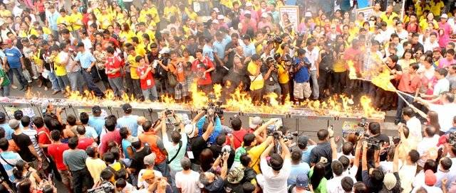
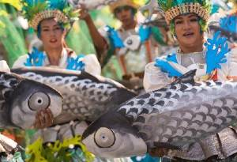

The area that is now known as Dagupan was described as marshland thickly covered with mangrove and nipa palm trees The natives lived along the shoreline and riverbanks of Calmay, Pantal, and Bonuan. But there were also communities in Malued, Lasip, Pogo, and Bacayao. The natives called the area Bacnotan which would later be incorporated into the encomienda of Lingayen that was established in 1583.
The first long distance railroad in the Philippines connecting Manila and Dagupan was opened on November 24, 1892.
Dagupan became a city by virtue of Republic Act No. 170, authored by House Speaker Eugenio Pérez. It was signed into law by President Manuel Roxas on June 20, 1947.
Demographic
The city has a population of 171,271 according to 2015 Census. In Dagupan, the Pangasinans are the predominant people and the Pangasinan language is predominantly used in the city and environs, followed by Filipino and English, as well as Ilocano, mainly in Calmay and Pantal. Chinese is mainly spoken only by a few city individuals of Chinese descent.
Bangus Festival

Dagupan is a city located on the Lingayen gulf in the province of Pangasinan in Luzon and is one of the top producers of milkfish or bangus in the province. Bangus is considered the tastiest milkfish in the world.
The highlight of the Dagupan Bangus Festival or Philis the grilling of thousands of bangus and followed by a street party. About 10,000 bangus in 1000 grills were grilled along Fernandez Avenue which is a major street of Dagupan during one world record-breaking celebration.
In May 3 of 2003, the people of Dagupan city formed the longest bangus barbecue which measured slightly over one kilometer and broke the long-standing world record by Peru in November of 1999 at 613 meters. A laser guided equipment was used to accurately measure the longest bangus barbecue. The victory was shortlived because but in 2005, it reclaimed the same world record for its 2.006 kilometers of barbecue grilling of more than 8000 kilograms of milkfish.

Other activities during the Dagupan Bangus Festival are the parade of street dancers wearing striking costumes and depicting the bountiful harvest of bangus. A group of cooks also demonstrate the different ways, about 101 ways, of cooking bangus before indulging in the juicy and delightful taste of the bangus dishes. You can also withness the local folks of Dagupan debone and eat bangus in a speedy manner. The heaviest, longest and most beautiful bangus caught are also displayed during the occasion.
The Dagupan Bangus Festival is considered one of the most exciting festivals in the Philippines and celebrated for a little over two weeks in the month of April and towards the first few days of May with the grilling of bangus in the streets highlighting the occasion. The festival started in the year 2002 and was conceptualized by then Mayor Benjamin Saplan Lim to promote the bangus industry so as to increase sales and production of the local milkfish. At present times, the festival has been considered a globally acclaimed event and best advertisement for the world’s tastiest milkfish.